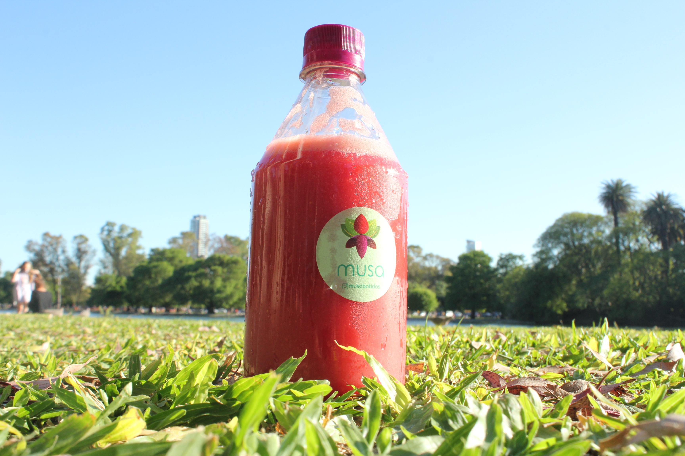
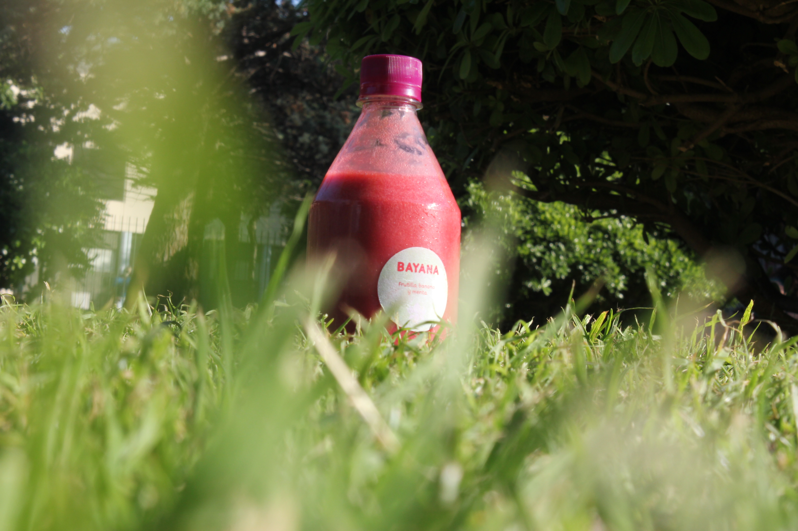
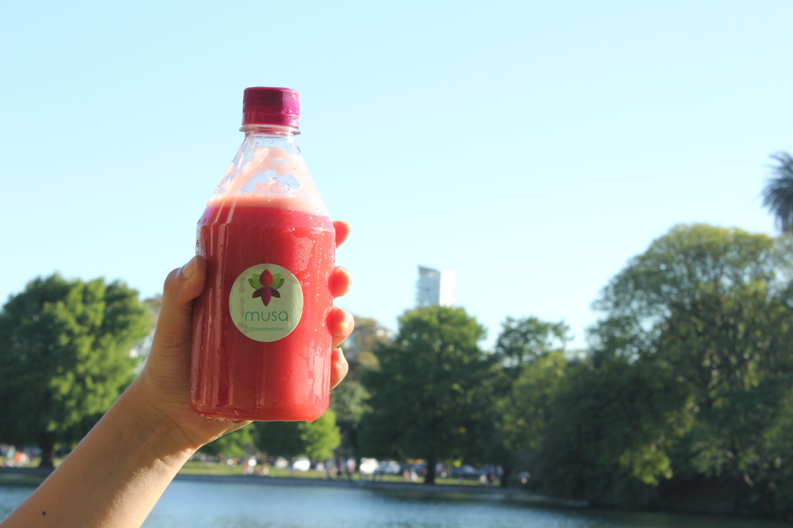

Musa nace del deseo de evocar los placeres del caribe a través de los sabores refrescantes de sus frutas tropicales.

Sin conversantes ni aditivos y sin T.A.C.C. Musa es apropiada para todos. Están realizadas con frutas premium naturales y congeladas, precisión y sobretodo con mucho amor.

Cada una de nuestras combinaciones se adaptan a cualquier situación para que puedas disfrutarlas incluso si no consumes azúcar.
